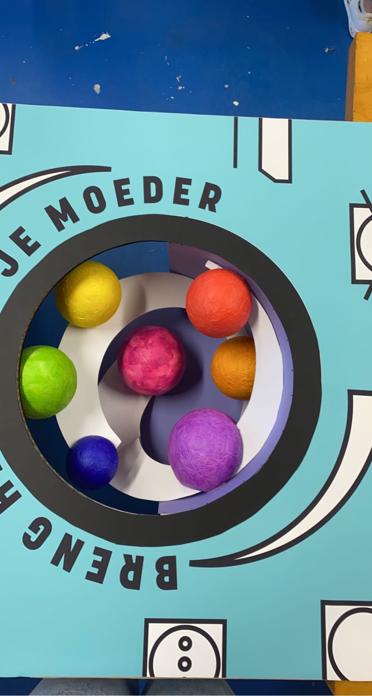

Projecten
The Student Hotel
The student hotel is een tweede jaars project van mijn mbo opleiding. De bedoeling van dit project was om voor The student hotel een hotel kamer en een balie te ontwerpen in hun huis style.
Merk onderzoek
Bij dit project was het erg belangerijk om de huis style van het bedrijf te begrijpen, daarom is een merk onderzoek erg belangerijk voor het ontwerp proces van start gaat. Wat belangerijk was voor dit project is dat er goed werd gekeken naar hun bestaande hotel kamers en algemene inrichting. Ook moesten we onderzoek doen naar bassis maten van verschillende onderdelen van de hotel kamer, denk hier bijvoorbeeld aan de loopruimte voor mensen en de ruimte die een roolstoel gebruiker nodig heeft om goed te kunnen draaien.
Hotel kamer
Het hotelkamer moest voldoen aan meerdere eisen. Het moest passen bij de stijl van The student hotel, maar het moest ook te gebruiken zijn voor roolstoel gebruikers.
Balie
Voor de balie moest er een uniek ontwerp komen dat wederom paste bij de stijl van The student hotel. Ook voor de balie moesten we rekening houden met toegankelijkheid en bruikbaarheid voor roolstoel gebruikers. Ik heb gekozen in mijn ontwerp om gebruik te maken van een geel en blauw kleuren pallet. Ook heb ik gekozen om de balie redelijk simpel te houden en te betegelen met driehoek vormige stukken in verschillende tinten blauw. De achter wand en het plafond heb ik interesanter gemaakt om je zicht veld ook om hoog te brengen.
Om het roolstoel vriendelijk te maken heb ik de balie op gedeeld in een hoger deel en een lager deel. Het lagere deel heeft hierdoor aan bijde de mogelijkheid om gebruikt te worden door een roolstoel gebruiker.
Prakbar
Prakbar is een project voor een restaurant met het consept dat het alleen voor meenemen is. Het restaurant waar het om gaat heet Prakbar, omdat het een restaurant is waar stamppot het focus punt is. Het aleen meenemen komt van het idee dat je in het restaurant alleen plekken heb waar je zelf je stampotten kan samen stellen in een wekpot, en zo per bar je stamppot eigen maakt.
Restaurant
Voor het restaurant zelf moesten we meerdere barren per onderdeel van de stamppot ontwerpen. De roete begon met het uitkiezen van een wekpot, daarna kon je bij een andere bar je stamppot uitkiezen en zo ging je voor elk onderdeel langs een bar tot bij de laatse bar alles berekend wordt. Ook moest er een onderdeel in komen voor de kookboeken die gepromoot worden door het restaurant.
Voor de stijl van het restaurant heb ik gekozen voor een modernere versie op een oudholandse stijl. Ik heb hier in ook gekozen om veel gebruik te maken van planten, omdat dit een frisse groene uitstraling geeft.
Voor het bedenken van een goeie lay-out van de barren in het restaurant ben ik begonnen met het maken van een vlekken plan. Dit is een groffe versie voor je begint met het maken van een platte grond. Hier na heb ik met dit vlekkenplan meerdere plategronden gemaakt en de beste naast het vlekkenplan gezet samen met een legenda. De legenda is handig om te kunnen zien wat welk onderdeel is en waar het voor dient. Omdat de prakbar met een loop route werkt heb ik deze ook aangegeven in mijn plattegrond en vlekken plan.
Na de lay-out heb ik ook mijn ideeen geprobeerd op papier te zetten. Per bar/ onderdeel moest er een schets komen om te laten zien wat je visie was voor deze onderdelen. Bij deze schetsen heb ik ook duidelijk aan gegevn wat het is met tekst om de elementen nog meer te versterken in mijn schetsen.
Etalage
De etalage moest passen bij het restaurant en deze ook in het klein reflecteren. Ook moest het de ingredienten van de stamppot weergeven samen met kookboeken waar dan stamppotten in voorkomen. Het moest mensen van buiten aan trekken om langs te gaan bij de prakbar om daar een stamppot te halen, of om de kookboeken te kopen om zelf deze stamppotten te kunnen maken.
Je moeder
Je moeder is een examen project voor een wassarette. De bedoeling van dit project is dat er een wassarette ontworpen moest worden waar je niet alleen je was komt doen, maar het ook een plek is waar je met je geemeenschap samen kan komen voor bijvoorbeeld: optredens, koffie drinken, werk projecten of om gewoon lekker te studeren terwijl je je was aan het doen bent. De naam Je moeder is ook ontstaan door een kleding label.
Wassarette
De wassarete moest merdere onderdelen bevatten. Denk hier bij aan zitplekken, een koffie en thee bar, het wassarette onderdeel waardoor het een wassarette is en geen cafee, maar ook onderdelen zoals een podium en een display locatie waar bezoekers hun eigen werk kunnen promoten en verkopen.
Ik heb voor de vormgeving gekozen om veel organische vormen te gebruiken en veel gebruik temaken van kleur in combinatie met zwart wit. Ook wouw ik in het ontwerp het label concept waar het idee op gebaseert is terug te laten komen. Dit heb ik gedaan door de iconen op de muuren terug te laten komen, maar ook door het font typen dit te laten reflecteren.
Raam display
De raam display moest het wasproces op een creative manier uitbeelden. Ik heb dit vorm gegeven doormiddel van gekleurde ronde bollen en een draai beweging die terug valt naar achter. De voorkant moest een wasmaschine weergeven die past bij het design van het interieur. Zo heb ik bijvoorbeeld de waslabel iconen weer terug laten komen op de voorgrond.
